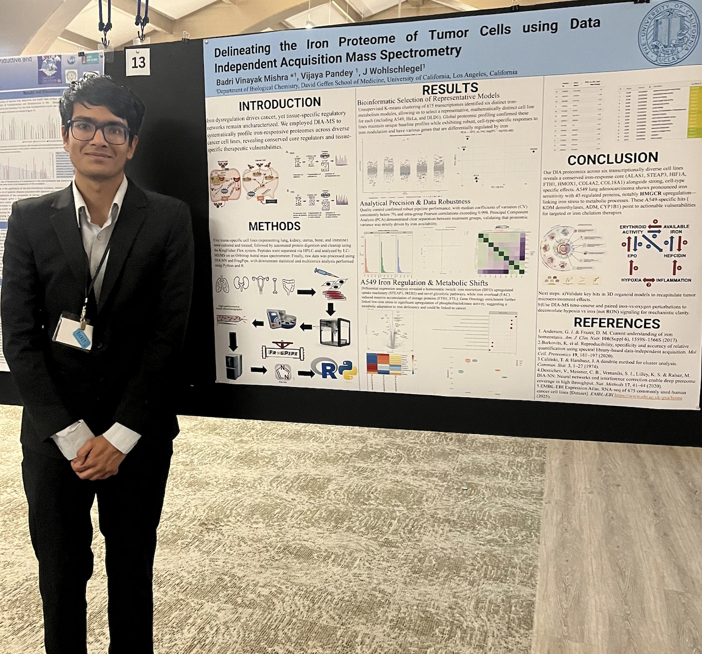
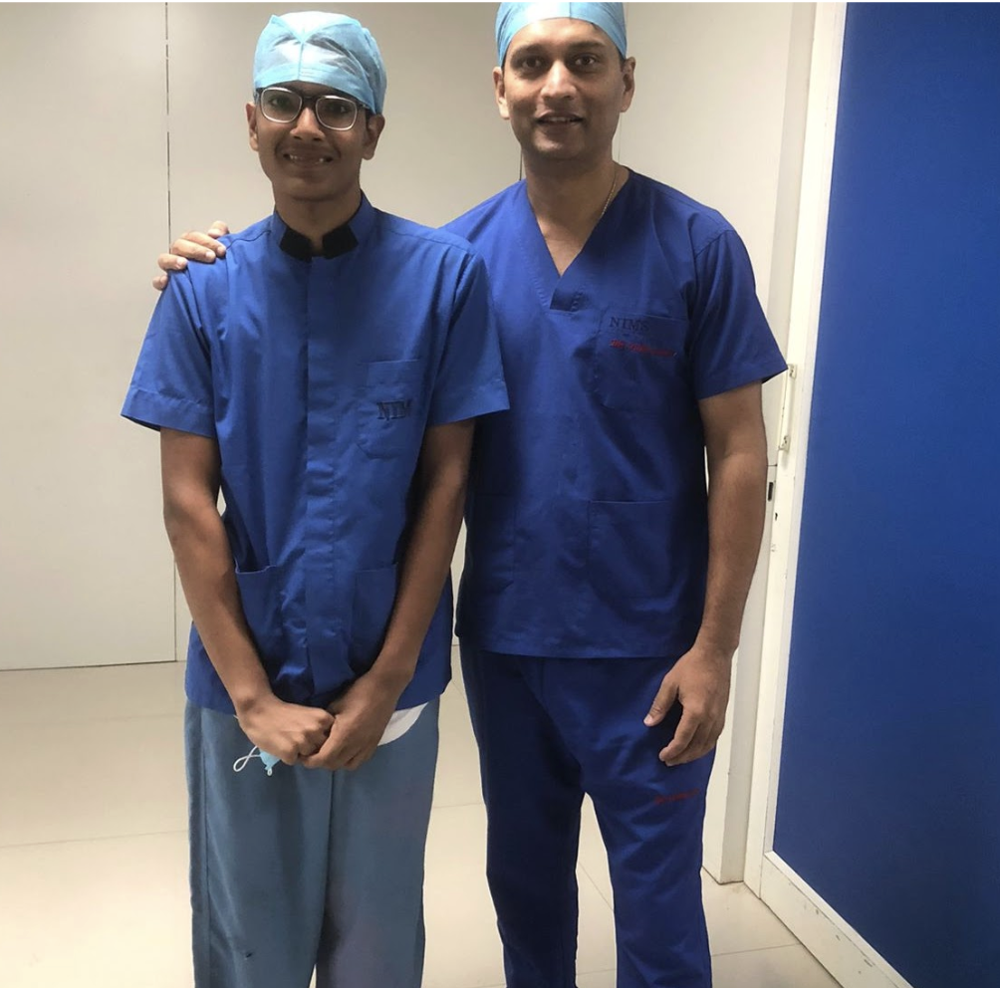
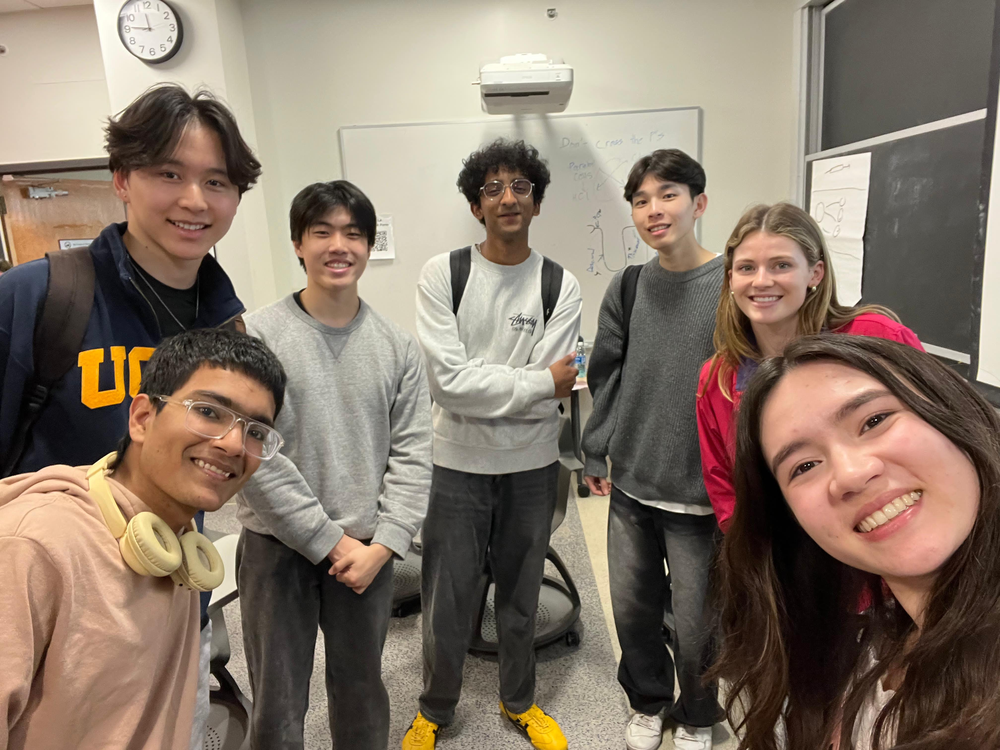

Experience

Poster presentation - Iron Proteome of Tumor Cells
Wohlschlegel Lab, UCLA
Mass Spectrometry-Based Proteomics
May 2024 – Present
Leading large-scale proteomic study on metabolic reprogramming in cancer cells. Clustered 675 cell lines using K-means and Gap Statistic methods. Processed DIA mass spectrometry data (~9,000 proteins/sample) and identified novel iron-dependent targets including KDM-family epigenetic regulators.
Ganz Lab, UCLA
Transcriptomics Research
Oct 2025 – Present
Investigating how the brain senses and regulates iron across the blood-brain barrier. Modeling communication between endothelial cells and astrocytes using qRT-PCR and Western blot.

UCLA Health Strategy Team
UCLA Health - Corporate Strategy
First Undergraduate Healthcare Consultant
April 2024 – Present
Working to shift healthcare improvement "from the conference room to the exam room."
NICU vs OBED: Faced ethical dilemma of prioritizing finite space. Met with 10+ patients—the human stories carried more weight than any spreadsheet.
Rare Disease Center: Led strategic roadmap for $100M+ donor-funded Center of Excellence.
Concierge Medicine: Built Python optimization model balancing physician compensation and margin.

Surgical observation, India
Cheers Health, India
Clinical Cardiology & AI/ML
June 2022 – Sept 2025
Designed core triage algorithm for AI-powered chatbot monitoring post-PCI patients. The system stratified symptoms into severity tiers using patient-reported data and vital signs.
Impact: Clinical trial (n=164, 6-month follow-up) reduced unplanned cardiovascular hospitalizations from 16.3% to 4.9%. 80% of patients reported decreased post-procedure anxiety.
But the technology revealed its limits: user retention was low in rural areas. The algorithm worked, but the human element was missing. This taught me that innovation without adoption is incomplete.

Bruin Olympiad Society
HAND at UCLA
Internal VP & Innovation Director
Led development of iStopShaking—a non-invasive wearable that mitigates Parkinson's tremors using AI-tuned IMUs and motorized gyroscopes.
BEAT at UCLA
Vice President & Trainer
Led strategic consulting engagements with Eli Lilly and Amgen. Secured $1,800 in sponsorships.
Bruin Olympiad Society
Co-Founder & Education Director
Founded UCLA's first academic olympiad organization. Lead 28-member team designing STEM competition questions.

UCLA Learning Assistant team
UCLA Learning Assistant
LS 7A/7C, Chem 14BE
Facilitate learning for 25+ students per section using collaborative drawing activities and Socratic questioning. Foster inclusive environments promoting growth mindset.
MoneyThink
Financial Literacy Tutor
Tutored 50+ middle school students in budgeting, saving, and 21st-century financial skills. Developed curriculum for underserved communities.
Changeist
Team Leader & Mentor
Lead youth through 25-week civic engagement program. Design workshops on public speaking, grassroots organizing, and community change projects.